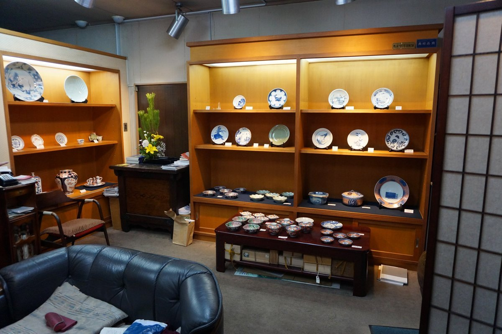

推薦1前坂晴天堂 大阪店まえさかせいてんどう おおさかてん
東京日本橋與大阪老松町都有店的東洋古陶瓷專門店，專精江戶時代的肥前有田瓷器：鍋島、古九谷、柿右衛門、初期伊萬里、古伊萬里。想看「真正的古伊萬里長什麼樣子」的人最適合，就算不買，一件件看下來也像逛小型美術館。
- 營業
- 13:30–17:30（大阪店；東京本店時間不同）
- 公休
- 週日、國定假日（另有臨時休業）；2/2（二）–2/5（五）照常營業，1/31（日）休
- 電話
- 06-6364-3397
- 地址
- 大阪府大阪市北区西天満4-5-2 老松ビル1F
- 交通
- 淀屋橋站，步行約 8 分（或 南森町站，約 10 分）
老松古美術街官網：京阪中之島線なにわ橋站步行約 5 分、JR 東西線北新地站約 10 分、JR 大阪站約 15 分；從西九條可搭 JR 到北新地
- 專門收藏級的古伊萬里、鍋島、古九谷，官網商品頁可以先看品項與風格
- 和ギャラリー海野在同一棟老松ビル 1 樓，一次可以逛兩間
- 大阪店只開下午 13:30–17:30，官網註明採購、出差時定休日以外也可能不在店，去之前最好先打電話確認
- 古美術店大多不能拍照、標價常常不寫，想看哪件直接請店主拿；進門打聲招呼「見せてください」比較禮貌
- 能不能刷卡、能不能免稅待確認；單價多為數萬日圓以上
- 陶瓷器請店家包厚一點（「割れ物なので厳重に包んでください」），回程放手提行李；回程搭捷星，注意托運與手提重量